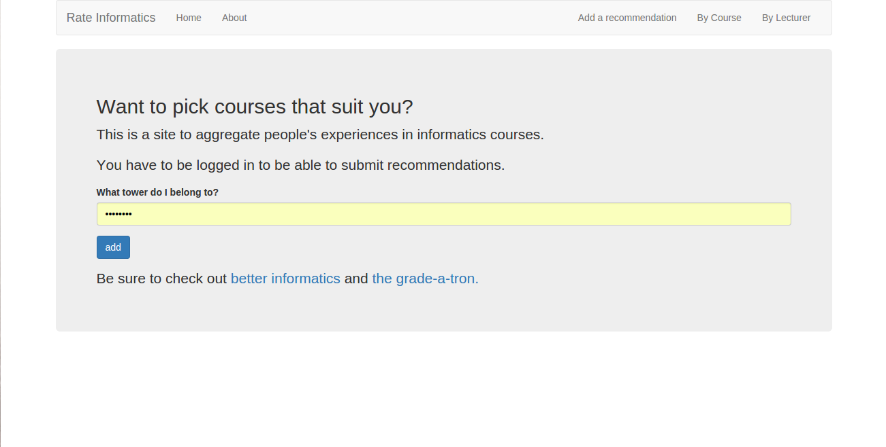
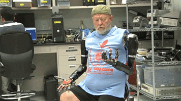
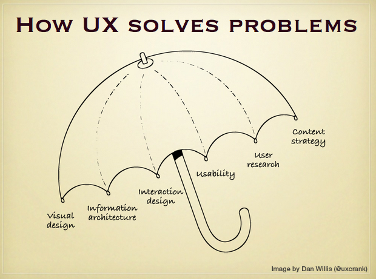

Things I Can't Do: UX
with Alex Kearney


##Hello.
* Artificial Intelligence & Computer Science Student
* 3rd Year at University of Edinburgh
* Machine Learning for Prosthetics with RLAI
* I'm going to talk about something I know nothing about
I'm a C.S. Student; I'm from
##What is an internet?
* Outside of research I've been playing with web-based projects

* I'm a science student: I focus on building the functionality first
* Having the specified functionality doesn't guarentee something is easy to use.
* Being pretty doesn't gaurentee something is easy to use.
No matter how impressive something is technically, **if people can't intuitively understand it people won't use it.**
I'm going to talk about something that's completely outside of the work I've done this summer
No matter how impressive something is technically
**if people can't intuitively understand it people won't use it.**

I'm going to talk about something that's completely outside of the work I've done this summer
Doesn't that sound familiar?

* rejection rate stats
* rejection rate stats
* rejection rate stats
After building things, I'd share them with friends. Most of the time they'd need guidance. They
wouldn't know what a system's for, how to use it. etc
##So, how do we improve usability?
UX and design is more important than protocols, formats, data models, schema etc. We focus on UX first, and then as we figure that out build the absolutely simplest, easiest, and most minimal protocols & formats sufficient to support that UX, and nothing more.
AKA UX before plumbing.
After building things, I'd share them with friends. Most of the time they'd need guidance. They
wouldn't know what a system's for, how to use it. etc
##Okay, but what is User Experience?
First, it's not design. Second, it's not user interface.
**The interface is not the solution.**

I'd heard all this before, but not in the same setting. I'm often hearing about this from.
It's in prosthetics, it's in.... and it contributes to the stuff we're doing
##But how can we sensibly integrate this?
1. user research.
2. some experiments to validate the assumptions.
3. Some IA work is done to break out the product/site into the logical areas and hierarchies.
Various wireframes and sketches are drawn to start to organize how users interact.
4. Now mockups with UI included can be made with confidence.
5. Mockups are user tested and iterated on through some prototypes or experiments.
6. After the mockups have been vetted, it’s now time to code up the interface – UI Design!
Once the usability of the UI has been honed, you can move it on to production – the place that people usually think of as the singular UI.
None of this stuff is taught. We care about the form; to a certain extent we care about design, but
otherwise, this is completely outside of what we're interested in.
##We already discuss usability with subjects!
**Users are notoriously un-reliable**
In reporting what they do remember, people rationalize their behavior. Countless times I have heard statements like "I would have seen the button if it had been bigger." Maybe. All we know is that the user didn't see the button.
Asking the user may even lead to the wrong desgin decisions.
1. People will say what they think you want to hear
2. People are telling you what they remember doing, not what they did
3. People rationalize their behaviour
How much someone likes a design is not correlated with usability
So what can we do about it?
I can't even
 I'm going to talk about something that's completely outside of the work I've done this summer
I'm going to talk about something that's completely outside of the work I've done this summer
I'm going to talk about something that's completely outside of the work I've done this summer
##We have Tools!
- Usability-Lab Studies
- Participatory Design
- Focus Groups
- Interviews
- Eyetracking
- Moderated Remote Usability Studies
- Unmoderated Remote Panel Studies
- Concept Testing
- Diary Studies
- Card Sorting
- Actionstream Analysis
- A/B Testing
- Unmoderated UX Studies
- Desirability Studies
**We even already do a lot of these.**
The overlap between what UX designers hope to accomplish and prosthetic training tasks
is a telling sign that these fields may be able to share ideas with each other.
So what can we do about it?
##Things we could do more of
- Usability-Lab Studies
- Participatory Design
- Focus Groups
- Interviews
- Eyetracking
- Moderated Remote Usability Studies
- Unmoderated Remote Panel Studies
- Concept Testing
- Diary Studies
- Card Sorting
- Actionstrem Analysis
- A/B Testing
- Unmoderated UX Studies
- Desirability Studies
**With all of these options, we need to be cognizant of the distinction
beween scripted and unscripted use.**
20 UX Methods in Brief
Here’s a short description of the user research methods shown in the above chart:
Usability-Lab Studies: participants are brought into a lab, one-on-one with a researcher, and given a set of scenarios that lead to tasks and usage of specific interest within a product or service.
Ethnographic Field Studies: researchers meet with and study participants in their natural environment, where they would most likely encounter the product or service in question.
Participatory Design: participants are given design elements or creative materials in order to construct their ideal experience in a concrete way that expresses what matters to them most and why.
Focus Groups: groups of 3-12 participants are lead through a discussion about a set of topics, giving verbal and written feedback through discussion and exercises.
Interviews: a researcher meets with participants one-on-one to discuss in depth what the participant thinks about the topic in question.
Eyetracking: an eyetracking device is configured to precisely measure where participants look as they perform tasks or interact naturally with websites, applications, physical products, or environments.
Usability Benchmarking: tightly scripted usability studies are performed with several participants, using precise and predetermined measures of performance.
Moderated Remote Usability Studies: usability studies conducted remotely with the use of tools such as screen-sharing software and remote control capabilities.
Unmoderated Remote Panel Studies: a panel of trained participants who have video recording and data collection software installed on their own personal devices uses a website or product while thinking aloud, having their experience recorded for immediate playback and analysis by the researcher or company.
Concept Testing: a researcher shares an approximation of a product or service that captures the key essence (the value proposition) of a new concept or product in order to determine if it meets the needs of the target audience; it can be done one-on-one or with larger numbers of participants, and either in person or online.
Diary/Camera Studies: participants are given a mechanism (diary or camera) to record and describe aspects of their lives that are relevant to a product or service, or simply core to the target audience; diary studies are typically longitudinal and can only be done for data that is easily recorded by participants.
Customer Feedback: open-ended and/or close-ended information provided by a self-selected sample of users, often through a feedback link, button, form, or email.
Desirability Studies: participants are offered different visual-design alternatives and are expected to associate each alternative with a set of attributes selected from a closed list; these studies can be both qualitative and quantitative.
Card Sorting: a quantitative or qualitative method that asks users to organize items into groups and assign categories to each group. This method helps create or refine the information architecture of a site by exposing users’ mental models.
Clickstream Analysis: analyzing the record of screens or pages that users clicks on and sees, as they use a site or software product; it requires the site to be instrumented properly or the application to have telemetry data collection enabled.
A/B Testing (also known as “multivariate testing,” “live testing,” or “bucket testing”): a method of scientifically testing different designs on a site by randomly assigning groups of users to interact with each of the different designs and measuring the effect of these assignments on user behavior.
Unmoderated UX Studies: a quantitative or qualitative and automated method that uses a specialized research tool to captures participant behaviors (through software installed on participant computers/browsers) and attitudes (through embedded survey questions), usually by giving participants goals or scenarios to accomplish with a site or prototype.
True-Intent Studies: a method that asks random site visitors what their goal or intention is upon entering the site, measures their subsequent behavior, and asks whether they were successful in achieving their goal upon exiting the site.
Intercept Surveys: a survey that is triggered during the use of a site or application.
Email Surveys: a survey in which participants are recruited from an email message.
from: http://www.nngroup.com/articles/usability-metrics/
Onwards
 I'm going to talk about something that's completely outside of the work I've done this summer
I'm going to talk about something that's completely outside of the work I've done this summer
I'm going to talk about something that's completely outside of the work I've done this summer